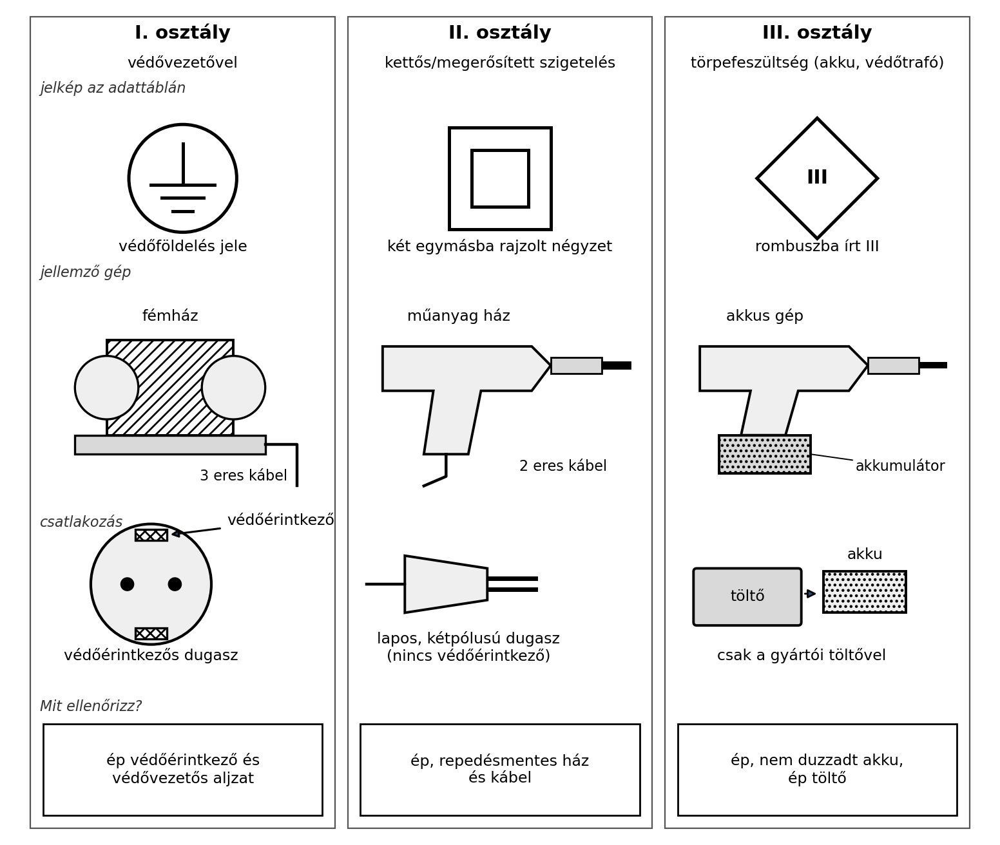
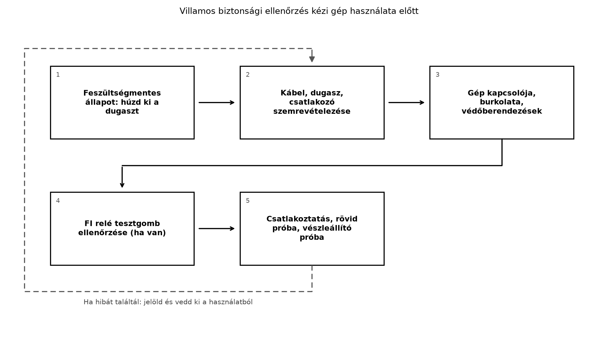

Egy tanuló a műhelyben bedugja a kézi körfűrészt a hosszabbítóba. A gép kábelén kis repedés látszik, a csatlakozó meleg, a padló pedig nedves a reggeli felmosástól. Az áramütés itt nem egy távoli baleseti statisztika: ha a hiba és a nedves környezet találkozik, a tanuló élete múlhat azon, hogy a hálózat védelme és a gép szigetelése rendben van-e. Ebben az alfejezetben megtanulod, mit ellenőrizhetsz te magad, és mit kell villamos szakemberre bízni.
Az áramütés akkor jön létre, ha a testen keresztül áram folyik. A hatás nem elsősorban a feszültségtől, hanem az áramerősségtől, az áram útjától és az időtartamtól függ. Már 10 mA körüli váltakozó áram is fájdalmas izomgörcsöt okozhat, 30–50 mA már légzésbénulást és életveszélyes szívritmuszavart idézhet elő (tájékoztató élettani értékek, ellenőrizendő). A bőr ellenállása nedvesen, izzadt kézzel nagyon lecsökken, ezért ugyanaz a 230 V nedves környezetben sokkal veszélyesebb.
Definíció. A névleges hálózati feszültség a műhelyben Magyarországon jellemzően 230 V (egyfázisú) vagy 400 V (háromfázisú), 50 Hz frekvenciájú váltakozó feszültség. A gépek adattábláján mindig ellenőrizd, milyen feszültségre készültek.
A villamos biztonság két védelmi szintre épül.
Definíció. Az alapvédelem a közvetlen érintés elleni védelmet jelenti. Ide tartozik a vezető részek szigetelése, burkolata, védőtávolsága, valamint a kábelek épsége. Az alapvédelem célja, hogy áram alatt álló résszel ne érintkezhess.
Definíció. A hibavédelem (régi nevén érintésvédelem) a közvetett érintés elleni védelmet jelenti. Ha egy hiba miatt a gép fémteste feszültség alá kerül, a hibavédelemnek kell megakadályoznia a veszélyes áramütést. A két leggyakoribb eszköz a védővezetővel ellátott földelés és az áram-védőkapcsoló.
A védővezető zöld-sárga színű ér a kábelben és a vezetékben. Feladata, hogy testzárlat esetén a hibaáramot elvezesse, így a kismegszakító vagy a biztosíték leoldjon. Szabály. A védővezetőt tilos megszakítani, eltávolítani, vagy zöld-sárga eret más célra használni.
Definíció. Az áram-védőkapcsoló (FI-relé) olyan készülék, amely a hálózatból elfolyó hibaáramot érzékeli, és nagyon gyorsan, jellemzően 30 mA hibaáramnál, rövid időn belül lekapcsolja az áramkört (a pontos kioldási idő és érték a készülék adattábláján szerepel, ellenőrizendő). A műhelyben gyakran kötelező, különösen nedves vagy kültéri környezetben.
Szabály. A villamos kéziszerszámokat érintésvédelmi osztályba sorolják:
A gép adattábláján mindig nézd meg az osztályjelet, mielőtt használod.

Az ábra oszloponként mutatja: az I. osztály jele a védőföldelés jele, a gép fémházas, és védőérintkezős dugasszal csatlakozik; a II. osztály jele két egymásba rajzolt négyzet, a gép lapos, kétpólusú dugaszt kap; a III. osztály jele a rombuszba írt III, a gép akkumulátorról üzemel.
A faipari gépen több villamos biztonsági elem van, amelyet a felhasználónak ismernie kell, és használat előtt ellenőriznie kell.
Szabály. A hosszabbítót, az elosztódobozt, a dugaszt és a csatlakozót minden használat előtt szemrevételezéssel ellenőrizd. Erre a gépi alfejezetekben is visszatérünk: az Kézi fűrészgépek: kézi körfűrész, merülőfűrész, szúró-, dekopír-, rezgő- és láncfűrész alfejezetben az indítás előtti ellenőrzés része lesz.
Az ellenőrzés lépései:
Az ábra öt hibaképet mutat: sérült köpeny kilátszó erekkel, a dugaszból kihúzódott köpeny, repedt dugaszház, égett érintkező és nagy terhelésnél feltekerve hagyott kábeldob. A szigetelőszalaggal „megjavított” kábelt sem szabad használni. A HTML-változatban gyakorolhatod: válaszd ki a párból a hibás képet.
Figyelem. Nedves kézzel, nedves padlón, esőben vagy kültéren a 230 V-os hálózati gép sokkal veszélyesebb. Ilyenkor előnyös az akkus kéziszerszám: nincs hálózati kábel, nincs közvetlen érintésveszély a fém testen. Az akkus gépnél azonban az akkumulátorra is ügyelj: sérült, duzzadt, lyukas akkut ne használj, és csak a gyártó által előírt töltővel töltsd.
Számítás. Egy műhelyi körfűrész motorjának felvett teljesítménye . Mennyi áramot vesz fel a 230 V-os hálózatból?
Adott:
,
.
Keresett:
(A).
Képlet:
Behelyettesítés:
Ellenőrzés: egy 16 A-es kismegszakító körre ez a gép önmagában elfér, de
egy elszívóval együtt már számolni kell.
Megjegyzés. Villanymotornál a valós áram nagyobb, mert , és ha az adattábla a leadott teljesítményt adja, a hatásfokkal is osztani kell. Például tájékoztató értékkel a felvett 2000 W-nál ; leadott 2000 W és esetén (ellenőrizendő: adattábla). Indításkor ennek többszöröse is lehet. Használd a gép adattábláján szereplő névleges áramot (A); az csak közelítés, és motoroknál alulbecsül.
Számítás. Ugyanez a gép 25 m hosszú, réz keresztmetszetű hosszabbítón üzemel. Becsüld meg a feszültségesést, ha a réz fajlagos ellenállása (tájékoztató anyagjellemző).
Adott:
,
,
.
Keresett:
(V).
Képlet:
,
majd
.
Behelyettesítés:
Ellenőrzés: ez a 230 V-nak kb.
-a.
A kisfeszültségű hálózatokon az 5 % körüli feszültségesés már sok gépnek
gondot okozhat, ezért a hosszabbítót minél rövidebbre és vastagabbra
válaszd (a megengedett értéket a tervezési szabvány adja meg,
ellenőrizendő).
Szabvány. A kisfeszültségű villamos berendezések létesítésére és biztonságára vonatkozó követelményeket az MSZ HD 60364 szabványsorozat tartalmazza (a pontos szabványszám és az idézett műszaki követelmény ellenőrizendő). A gépek villamos szerkezeteire az MSZ EN 60204-1 szabványsorozat vonatkozik (ellenőrizendő). A munkahelyi munkaeszközök biztonságát a munkavédelmi törvény és a kapcsolódó rendeletek írják elő (1993. évi XCIII. törvény – ellenőrizendő).
Szabály. A villamos berendezések időszakos felülvizsgálatát csak villamos szakember végezheti. A gyakoriság a kockázatértékeléstől és a munkahelyi előírástól függ; hordozható kézi gépeknél, hosszabbítóknál sok műhelyben évente végeznek mérést (tájékoztató gyakorlat, ellenőrizendő). A felhasználó feladata a szemrevételezés és az áram-védőkapcsoló tesztgombjának időszakos ellenőrzése, ha azt a műhely munkavédelmi szabályzata megengedi.

A villamos biztonsági ellenőrzést nem lehet elvégezni „fél szemmel”. Használd ezt a táblázatot:
| Vizsgált elem | Mit nézz? | Elfogadhatatlan, ha |
|---|---|---|
| Hálózati kábel | külső köpeny, szigetelés | vágás, repedés, olvadás, látszó rézér |
| Dugasz, csatlakozó | érintkezők, kábelrögzítés | laza, megolvadt, hiányzó védőér |
| Gép burkolata | szerelt állapot, kapcsoló | törött, hiányzó csavar, könnyen elérhető feszültség alatti rész |
| FI-relé | tesztgomb | nem old le a próbánál |
| Vészleállító | benyomás, visszaállítás | nem állítja le a gépet, magától visszaáll |
Ha bármelyik oszlopban hibát találsz, jelöld meg a gépet, és ne használd, amíg szakember meg nem vizsgálta.
Egy asztalosműhelyben a tanuló a kézi gyalugépet egy régi hosszabbítóra csatlakoztatta. A gép többször leállt, majd a FI-relé leoldott. A szemrevételezéskor kiderült, hogy a hosszabbító csatlakozójában a zöld-sárga ér kilazult, és a motor egyik tekercsének szigetelése is sérült (testzárlat). Mivel a védővezető nem kötött be, a hibaáram nem tudott elfolyni, és a gép fémteste feszültség alatt maradt. Amikor a tanuló megérintette, a testén át induló hibaáramot a 30 mA-es áram-védőkapcsoló érzékelte, és a másodperc töredéke alatt lekapcsolt. A tanulság: a FI-relé életet mentett, de csak a második, utolsó védelmi vonal; a hibát a védővezető ellenőrzése előzte volna meg. A hosszabbítót nem elég „rábízni a múltra”, hanem minden használat előtt ellenőrizni kell, és a gyanús csatlakozót ki kell javíttatni.
1. feladat (A) Írd le legalább négy lépésben a kézi gép hálózati kábelének használat előtti szemrevételezését.
2. feladat (A) Magyarázd meg egy mondatban, mi a különbség az alapvédelem és a hibavédelem között.
3. feladat (B) Egy 1600 W-os fűrészgép 230 V-on üzemel. Számítsd ki az áramfelvételét. Megengedhető-e, hogy ugyanarra a 16 A-es körre egy 1100 W-os elszívót is csatlakoztass? Indokold.
4. feladat (B) Készíts rövid ellenőrzőlistát: mit vizsgálsz meg egy hosszabbítón, mielőtt egy kézi körfűrészt rákapcsolsz? Ezt a listát később felhasználhatod a Kézi fűrészgépek: kézi körfűrész, merülőfűrész, szúró-, dekopír-, rezgő- és láncfűrész alfejezetben.
5. feladat (C) Egy tanuló egy I. osztályú gépet olyan dugasszal akar használni, amelynek a védőér csatlakozása hiányzik. Mit mondanál neki, és mi a helyes megoldás? Fogalmazz meg legalább két biztonsági indokot.
6. feladat (D) Állíts össze egy rövid, kétszemélyes műhelygyakorlatot: az egyik személy használat előtt ellenőrzi a gépet és a hosszabbítót, a másik megfigyel és feljegyez. Írd le a gyakorlat lépéseit és az értékelési szempontokat.
Önellenőrzés – válaszok
1. feladat (A) megoldás
1. Húzd ki a dugaszt a hálózatból.
2. Nézd végig a kábel teljes hosszát: külső köpeny, szigetelés.
3. Ellenőrizd a kábel csatlakozóit: nincs-e lazulás, olvadás,
repedés.
4. Hajlítsd meg kissé a kábelt, és nézd meg, nem nyílik-e szét a
szigetelés, nem látszik-e ki eret ér.
5. Ha sérülést találsz, jelöld meg a gépet, és ne használd.
2. feladat (A) megoldás
Az alapvédelem a közvetlen érintéstől véd (szigetelés, burkolat), a
hibavédelem pedig attól, hogy egy hiba következtében feszültség alá
kerülő fémrész megérintése veszélyes legyen.
3. feladat (B) megoldás
Fűrészgép:
.
Elszívó:
.
Összesen:
,
ami kisebb, mint 16 A.
Közelítő számítás (I = P/U; az adattábla szerinti áramokkal ellenőrizd):
a motoros gépek valós árama és indítási árama nagyobb. A számítás
szerint férhet, de az indítási áramlökés miatt nem ajánlott a kört
tartósan 100 %-ig terhelni, és egyéb fogyasztókat is figyelembe kell
venni.
4. feladat (B) megoldás
Ellenőrzőlista:
- Dugasz és csatlakozó épek, nem olvadtak, a védőér rögzített.
- Kábel teljes hosszán ép, nincs vágás, repedés, csomó.
- A dob teljesen letekert, ha nagy teljesítményű gép lesz rákötve.
- A hosszabbító IP-besorolása megfelel a környezetnek (pl. nedves,
kültéri).
- A gép dugaszának védőér csatlakozása (I. osztálynál) rendben
van.
- FI-relé tesztgomb leold (ahol van).
5. feladat (C) megoldás
Egy I. osztályú gép védővezető nélkül használata tilos, mert:
- Védővezető nélkül a testzárlat nem okoz kismegszakító-leoldást, a
fémtest feszültség alatt marad, és a test életveszélyes.
- Ha van 30 mA-es FI-relé, az csak akkor old le, amikor az áram már
valakinek a testén át folyik – ez a második, utolsó védelmi vonal, nem
helyettesíti a védővezetőt.
Helyes megoldás: a gépet ép, védővezetős dugasszal kell használni, vagy
a sérült dugaszt villamos szakemberrel ki kell cserélni.
6. feladat (D) megoldás
A gyakorlat menete:
1. A tanuló kiválaszt egy kézi kisgépet és egy hosszabbítót.
2. A megfigyelő egy ellenőrzőlistát kap (kábel, dugasz, csatlakozó, gép
burkolata, kapcsoló).
3. A tanuló feszültségmentes állapotban elvégzi a szemrevételezést, és
minden lépést hangosan indokol.
4. A megfigyelő feljegyzi, ha egy lépés kimaradt vagy hibás.
5. Szerepcsere.
Értékelés: minden ellenőrzési pont elvégzése, helyes indoklás,
hibafelismerés. A gyakorlat végén a megfigyelő visszajelzést ad, és a
tanuló kijavítja az esetleges hibákat.
A villamos biztonság a faipari műhelyben azt jelenti, hogy a 230/400 V-os hálózati gépekkel csak akkor dolgozol, ha az alapvédelem (szigetelés, burkolat) és a hibavédelem (védővezető, FI-relé) rendben van. Ismerned kell a gépek érintésvédelmi osztályát: az I. osztály védővezetőt igényel, a II. osztály kettős szigetelésű. Használat előtt mindig végezd el a szemrevételezést: kábel, dugasz, csatlakozó, gépkapcsoló, védőburkolat, FI-relé teszt, vészleállító próba. A hosszabbítót teljesen tekertsd le, nedves környezetben válassz akkus gépet vagy IP-védett elosztót. Tilos sérült kábellel, védővezető nélkül, nedves kézzel dolgozni. Villamos mérést és javítást csak villamos szakember végezhet. Ezt az ellenőrzőlistát a gépi technológiai lapoknál, például a Kézi fűrészgépek: kézi körfűrész, merülőfűrész, szúró-, dekopír-, rezgő- és láncfűrész alfejezetben is használjuk: ott az indítás előtti ellenőrzés része lesz a kábel, a dugasz, a vészleállító és a védőburkolat vizsgálata.
Forrástípusok: munkavédelmi törvény és munkaeszközökre vonatkozó rendeletek, kisfeszültségű villamos berendezések szabványai (MSZ HD 60364 sorozat), gépek villamos szerkezeteire vonatkozó szabvány (MSZ EN 60204-1), gépkönyvek, gyártói adatlapok, munkavédelmi oktatási anyagok.
Ellenőrizendő pontok: a konkrét szabványszámok és kiadási évük, az FI-relé kioldási értéke és ideje, az időszakos felülvizsgálat előírt gyakorisága, a 10–50 mA-es élettani határértékek, a fajlagos ellenállás értéke, valamint a példaként megadott feszültségesés megengedett mértéke.